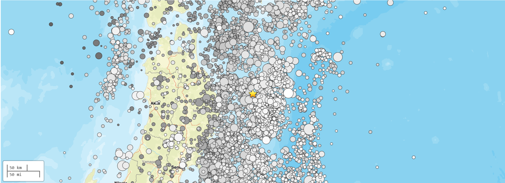

Case Study
實際地震案例分析
2026年4月20日 M7.4 日本宮古市近海地震
M 7.4
規模 Magnitude
2026/04/20
日期 Date
98 km
宮古市 ENE
逆衝斷層
斷層類型 Thrust

USGS 地震分布圖：2026年4月20日 M7.4 宮古市東北東方 98 公里處地震及周邊地震活動。
區域板塊構造
震央位於日本海溝附近，是太平洋板塊與北美板塊（鄂霍次克微板塊）的交界處。太平洋板塊以每年約 83 mm/yr 的速度向西隱沒至北美板塊下方。此區域過去100年內發生了36次M7以上地震，距離2011年M9.1東北大地震僅192公里。
地震成因分析
此次地震主要成因是太平洋板塊向北美板塊隱沒所導致的板塊擠壓與應力釋放。地震矩張量解顯示東西向的擠壓應力，與此區域預期的應力方向一致，表明滑動發生在板塊介面上。這屬於典型的隱沒帶大型逆衝區地震 (Megathrust earthquake)。
震源機制球與斷層錯動方向

手繪震源機制球：中央區域為受壓區（陰影），呈現逆衝斷層特徵。
斷層錯動方向解釋
1. 斷層類型：逆衝斷層 (Thrust Fault)，中央壓縮象限與隱沒帶擠壓環境吻合。
2. 應力方向：P 軸呈東西向（WNW-ESE），對應太平洋板塊向西隱沒方向。T 軸大致垂直。
3. 錯動方向：實際斷層面走向約南北向、向西緩傾斜。上盤（北美板塊）相對於下盤（太平洋板塊）向上並向東逆衝滑移。